1.软件过程
软件过程也称为软件生存周期过程，是指软件生存周期中的一系列相关过程。其中过程就是活动的集合，活动是任务的集合，任务把输入加工成输出。活动的执行可以是顺序的、迭代的、并行的、嵌套的、有条件引发的。
经典软件过程模型的特点
瀑布模型
将基本的开发活动看成一系列界限分明的独立阶段，是一种计划驱动的软件过程，有利于规范软件开发活动。
优点：
- 简洁
- 在支持开发结构化软件，控制软件开发复杂度，促进软件开发工程化中起了显著作用。
- 通过开发计划的制定、项目估算、阶段评审和文档控制有效地对软件过程进行指导，从而对软件质量有一定程度的保证。
缺点：
- 无法接受需求的不确定性。
- 错误发现容易太迟，导致返工。
- 作为线性模型，无开发者常被不必要地单个，一些项目成员要等其他成员先完成依赖任务后开始开发。
增量模型
增量式开发的思想是先开发出一个初始的实现，给用户使用并听取用户的使用意见和建议，通过多个版本的不断修改直到产生一个充分的系统。
描述，开发和验证交织在一起。
优点：
- 降低了适用用户需求变更的成本。
- 在开发过程中更容易得到用户对于已做的开发工作的反馈意见。
- 使更快地交付和部署有用的软件到客户方变成可能。
缺点：
- 过程不可见。
- 伴随着新增量的添加，系统结构在不断退化。随着时间推移，变更成本逐渐上升。
与瀑布模型相比的特点：
- 多个版本可以并行开发。
- 每个版本都是可运行版本。
- 需求在开发早起是明确的。
演化模型
演化模型是迭代的过程模型，支持并行开发。
- 演化模型在一部分需求被定义后就开始开发了，在每个相继的版本中逐步完善。
- 允许需求变更，通过演示迭代产生部分系统功能，尽早手机用户对系统的反馈，及时改正对用户需求的理解偏差。
常见的是原型模型和螺旋模型。
统一过程模型
是一种风险驱动的软件过程模型。
它基于UML和构件式架构的迭代，演化开发过程
将软件开发生命周期分为：
- 先启-目标里程碑
- 精化-架构里程碑
- 构建-初始能力里程碑
- 产品化-发布里程碑
四个阶段。
每个阶段可以细分成若干个迭代。
是最被广泛接受的模型。
演化模型与增量模型区别
增量模型在需求设计阶段是整体进行的，在编码测试阶段是渐增进行的。演化模型全部系统是增量开发，增量提交。
过程评估与CMM/CMMI
过程评估
定义的软件过程是否适合本组织或本团队？
过程绩效如何？
软件过程能力成熟度为几级？
哪些过程域做的很好，哪些又有不足？
CMM：软件成熟度模型。
CMMICMM威力加强版，软件能力成熟度模型集成。
CMMI包括：
- CMMI for Development：开发模型，提供软件开发过程的管理，测量，监控指南。
- CMMI for Service：服务模型，提供组织内部向外部客户的服务交付指南。
- CMMI for Acquisition：采购模型，提供软件采购和外包管理的服务交付指南。
CMMI模型用不同的表示法支持不同的改进方法：
组织成熟度方法：阶梯式模型，强调组织成熟度，从过程域集合的角度考察整个组织的过程成熟度阶段。过程能力方法：连续式模型，强调单个过程域的能力，从过程域的角度考察基线和度量结果的改善。
阶梯式模型将软件组织的成熟度分为以下5级：
- 初始级：无序混乱的。
- 已管理级：有管理过程了。
- 已定义级：软件管理和工程两方面标准化了，就像现在公司一样。
- 定量管理级：软件过程和产品质量 有详细的度量一举，对软件过程和产品有定量的理解和控制了。
- 持续优化级：过程的量化反馈和先进的新思想，新技术促使过程持续不断改进。
敏捷宣言与敏捷过程特点
4条敏捷价值观
- 注重个人交互胜于过程和工具
- 注重可用的软件胜于事无巨细的文档
- 注重客户协作胜于合同谈判
- 注重随机应变胜于恪守计划
12条基本规则
- 最优先的目标是通过尽早地，持续低交付高价值的软件来满足客户需求。
- 欢迎需求变化，甚至在开发后期。
- 经常交付可用软件，间隔从两周到两个月不等，优先采用较短的时间尺度。
- 整个项目自始至终，业务人员和开发人员都必须每天在一起工作。
- 以积极主动的人员为核心建立项目团队，给与他们所需的环境和支持，并且信任他们能胜任工作。
- 开发团队内外传递信息最有效的方法是面对面的交流。
- 可用的软件是最主要的项目进展指标。
- 敏捷过程提倡可持续的开发。项目发起人、开发者、用户都应始终保持稳定的开发步调。
- 持续关注技术上的精益求精和优良的设计以增强敏捷性。
- 简约，将必要的工作最小化的艺术，是成功的关键。
- 最优的架构、需求、设计浮现于自组织的团队。
团队定期不断对如何更加有效地开展工作进行反思，并相应地调整，校正自己的行为。
适合采用敏捷过程的场景
- 需求不确定、易挥发
- 有责任感和积极向上的开发人员
- 用户容易沟通并能参与
- 团队小于10人
- #### 特点 敏捷过程保留了传统软件实践的基本框架活动：客户沟通，策划，建模，构建，测试，交付，迭代等，但将其所见到一个推动项目组朝着构建和交付发展的最小任务集。
2.软件需求
需求就是系统必须符合的条件或能力。
FURPS+模型：
功能性：F，特性，功能和安全性。
易用性：U，描述实现“用户友好”的因素，几分钟上手啥的。
可靠性：R，无故障执行一段时间的概率。
性能：P,在功能需求基础上规定的性能参数，包括速度，效率，可用性，准确性，吞吐量，响应时间或资源使用情况。
可支持性：S,系统使用各活动所需工作量的大小。
URPS合成非功能需求
+是一些补充的需求：
设计约束：比如必须采用某种算法。
实现需求：比如语言，策略等。
接口需求：与之交互的外部软件或硬件。
无力需求：必须具备的物理特征，代表硬件要求。
需求工程的基本过程：
- 需求获取
- 需求分析
- 需求定义
- 需求验证
- （全程）需求管理
软件需求包括3个不同的层次：
1. 项目干系人需求：原始需求，通过调研得到的项目干系人对系统的要求。
2. 前景文档：既概要需求，用于记录关键的用户需要和系统特征。
3. 软件需求规约：既正式的详细软件需求，用于记录详细的功能需求，非功能需求，约束条件。其中功能需求常用用例图来刻画。
用例图及其UML表达
用例图
用例图是一种描述待加建软件上下文范围及它提供的功能的概览视图。从黑盒的角度描述谁与系统交互，外部世界希望系统做些什么。
用例图包含三种要素：
执行者：Actor，与系统交互的实体。
用例：执行者希望系统为他们做什么。
关系：A-C，A-A，C-C 关系。关系分3类 包含、扩展、泛化。

活动图
活动图用于刻画一个系统或者子系统的工作流程，也可用于描述用例内部的事件。它提供了活动流程的可视化描述，关注被执行的活动及谁负责执行这些活动。
活动图的基本元素包括：
- 动作，Action，一个活动可以包含多个动作。用圆角矩形表示。
- 控制流，用来表示从一个动作到另一个动作的流的控制。用带箭头的直线表示。
控制节点分为
- 初始节点：实心圆表示，是活动开始的节点。
- 终止节点 ：活动终止：带十字叉的圆。流终止：带边框的实心圆。
- 判断节点和合并节点
用菱形表示，判断节点有一个输入流和多个输出流，所有离去流的监护条件应该：
- 覆盖所有可能性（避免流冻结）
- 不应该重叠（避免二义性） 合并节点接受多个流的情况下，它的离去流指向的动作会被执行多次。
- 分叉节点和汇合节点 用来表示并发流程的开始和结束，用水平或者垂直黑线表示。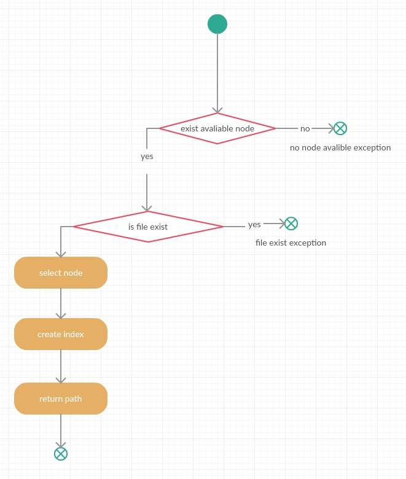
- 对象节点 是动作处理的数据，用举行表示，某些情况下有用，不推荐泛用。
分区/泳道图
分区图=泳道图
分组的目的是说明执行具体活动的责任。
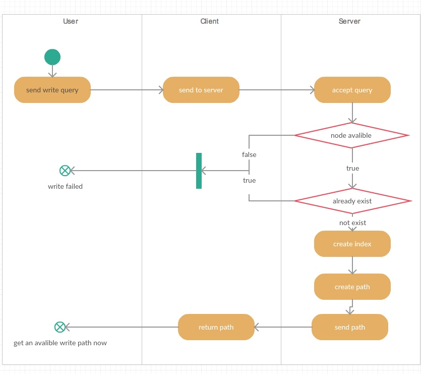
时序图（顺序图）
时序图（序列图，顺序图）关注对象间协作的UML图。
它通过描述对象之间发送消息的时间顺序显示多个对象之间的动态合作。
垂直维是时间，表示对象间传递晓得的时间顺序。
水平维是角色，代表参与交互的对象。
消息 从发出者指向接受者，由垂直位置表示。分为：
- 同步消息 带实心箭头的实线。
- 异步消息 开放箭头的实线。
- 返回消息 带开放箭头的实线？应该是虚线实体箭头。
可以用序列片段（Fragment）简化时序图，也可以更清晰地描述时序图中的流程控制结构。它包括：
- 交互使用：ref。
- 循环：loop。
- 条件：alt。
- 并发：par

数据模型建模及其UML表达
类
类定义了一组有着状态和行为的对象。状态由属性和关联描述。个体行为由操作来描述，方法是操作的实现。

书上的例图没有方法返回类型
UML支持的可见类型包括：
- + public
- # protected
- - private
- ~ package
继承/泛化
一组类可以用繁华关系再起内部建立的继承机制分享公用的状态和行为描述。
类之间的泛化关系用带空心三角的实现来表示，多重继承现实存在，但建模时要注意，他会引起冲突和重复继承问题。
继承是一种 is-a关系，直观但也会引起混淆。
继承关系由子类指向父类。
Liskov替换准则
在继承时，子类应该能替换父类。
关联
两个相对独立的类，当一个类的实例与另一个类的特定实例存在固定关系时，这两个类就存在关联关系，关联的两个连接点成为关联端，在关联端可以设置名字，可见性，基数等特征，
基数是连接两端的数字，表示这一段的类可以有几个实例。

上图有问题哈
箭头由车指向人，车知道主人是谁，但人不知道自己有哪些车，双向关联用直线连接就好。
分析阶段不需要在乎关联的方向，应避免多余的关联。
设计阶段关联用来说明关于数据结构的设计和类之间职责的划分，这个时候关联的方向性很重要，而且为了提高对象的存取效率和对特定类信息的定位，也可引入一些必要的多余关联。
聚合
聚合是一种特殊的关联，表示部分与整体的关系，比如车队是车的聚合，用带空菱形的实线表示，空菱形与聚合类连接（集合类）
组合
组合是一种更强形式的聚合，用带有实菱形的实现表示，比如夫妻-妻子。
聚合与组合的区别在于整体和部分的生存周期是否独立。组合关系的部分依赖于整体存在，整体消亡时部分亦消失。
依赖
当一个类的行为或实现影响了另一个类时，这两个类之间就存在依赖关系。
依赖关系表示两个模型元素之间存在的一种语义关系，被依赖着的某些变化会要求或指示依赖者随之发生变化。根据这个定义，关联和泛化都是依赖关系，但是他们有更特别的语义，所以有自己的名字和详细的语义。
衍型：在已定义的模型元素的基础上构造一种新的模型元素的方法。衍型的信息内容和形式与已存在的基本模型元素相同，但是含义和用法有所扩展。例如对类进行扩展，定义一种特殊的类Interface
依赖的拓展（衍型）包括：
- 访问：一个包访问另一个包的内容
- 绑定：为模板参数指定值，已生成一个新的模型元素
- 调用：一个类的方法调用其他类的一个操作
- 创建：一个类创建另一个类的实例
- 派生：一个实例从另一个实例导出
- 实例化：一个类的方法创建另一个类的实例
- 许可：许可一个元素使用另一个元素的内容
- 实现：规约及其实现之间的映射
- 精华：两个不同语义层次上的元素之间的映射
- 发送：信号发射者和接受者之间的关系
- 替代：一个类支持另一个类的接口和契约，则这个类就可以替代另一个类
- 跟踪依赖：不同模型中的元素之间存在的链接，但不如映射精确
- 使用：一个元素为了实现其功能，需要用到已存在的另一个元素，包括调用，实例化，创新，发送等。
接口和实现
接口和实现分离使软件模块更加独立，从而增加可复用性，减少维护成本。
接口是一组操作的集合，它是对类、构建、子系统等行为的抽象
他是一种特殊的类，包含操作但不包含属性，可以用衍型《》或圆圈表示：
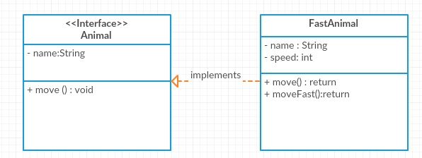
实现（Realize）关系是一种特殊的依赖关系，他表示两个模型元素之间的关系：一个模型元素定义了规约（Spec），二另一个模型元素则实现了这个规约
实现关系用闭合空箭头虚线表示。
行为模型建模及其UML表达
状态建模
状态：一个对象生命期内的一个阶段，该阶段中对象要满足一些特定的条件、执行特定的活动、或等待某个（些）事件的发生。
事件：可以触发对象状态改变的外部刺激，也就是消息的发出与接收。他决定状态迁移何时发生。
状态迁移：是状态之间的关系，当发生一个时间，条件满足就会发生从原状态到目标状态的改变。
UML中的状态（State）表示在某个时间段内：
- 某个陈述是正确的，比如x-y>0
- 某个动作正在执行（检查存货）或在某个时间等待触发（等待到货）
状态图跟踪一个类在系统中全生命周期的状态切换。

有1个起始状态，0个或者多个结束状态。


一个状态只能发生一个迁移，迁移条件一定互斥。事件必须是瞬间完成的动作。
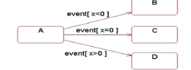
UML中有四种事件：
变更事件：当给定条件成立时就会发生变更事件。是一个条件表达式。
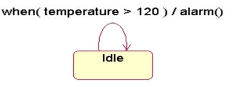调用事件：当给定对象的操作被调用执行时会发生调用事件。

时间事件：表明时间段过去，或某个特殊时间点的触发。通过时间表达式是否满足表示事件。用关键字after或when表示。

信号事件：当给定对象收到某实时信号。表示接受一个对象发送的信号(信息)的事件，有可能引发状态迁移。比如抛异常。
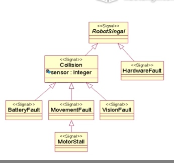
变更事件与警戒条件的不同：变更会持续监控，而警戒只在出现时调用一次。
信号与调用区别：信号是异步事件，调用是同步事件。
动作Action，是在状态内部或者状态间迁移时执行的原子操作。

订单处理的状态机图：
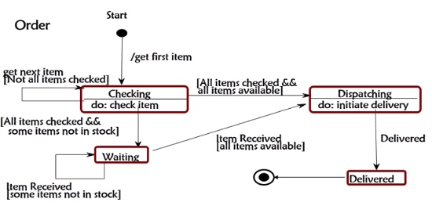
组合状态：
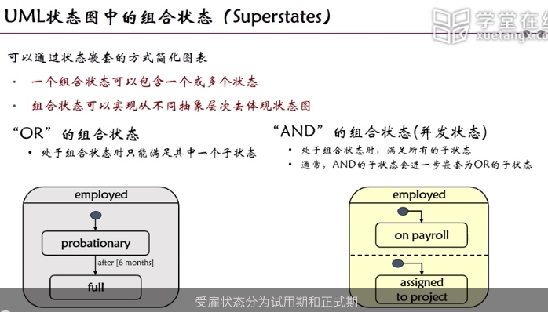
超级状态：

3.软件设计与构造
软件体系结构
软件体系结构包括构成系统的设计元素的描述，设计元素之间的交互，设计元素的组合模式以及在这些模式中的约束。
MVC就是一个体系结构。
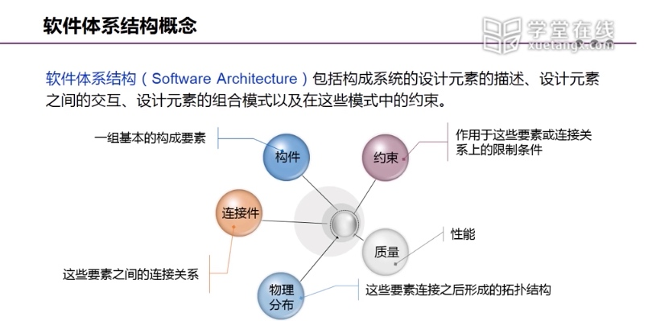
软件体系结构=构建+连接件+约束
关注于：
- 如何将复杂的软件系统划分成模块
- 如果规范模块的构成
- 如何将这些模块组织成为完整的系统
- 如何保证系统的质量要求
构件是具有某种功能能的可复用的软件结构单元，表示系统中主要的计算元素和数据存储。构件以服务形式存在，以接口与外界交互
连接是构件间建立和维护行为关联与信息传递的途径。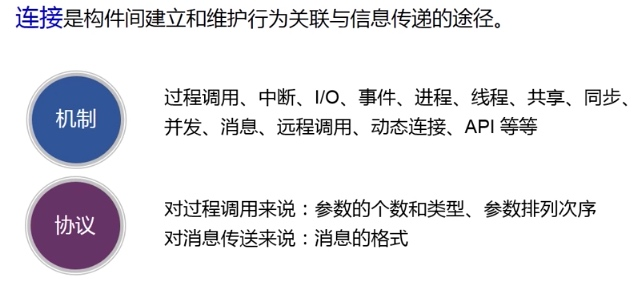
连接件表示构件之间的交互并实现构件之间的连接。
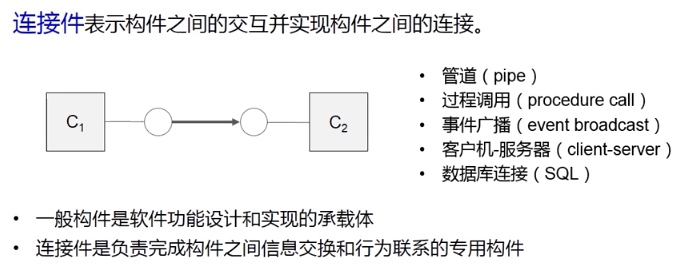


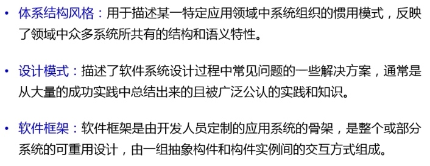
体系结构风格：用于描述某一特定应用领域中系统组织的惯用模式，反映了 领域中众多系统共有的结构和语义特性。
设计模式：描述了软件系统设计过程中常见问题的一些解决方案，通常是从大量的成功实践。
软件框架：软件框架是由开发人员定制的应用系统的股价，是真个或部分系统的可重用设计，鱿鱼足抽象构建和构建实例间的交互方式组成。
层次化

软件体系结构风格
- 独立构建
- 数据流
- 数据中心
- 虚拟机
- 调用返回
下面介绍几个常用风格。
主程序-子程序风格
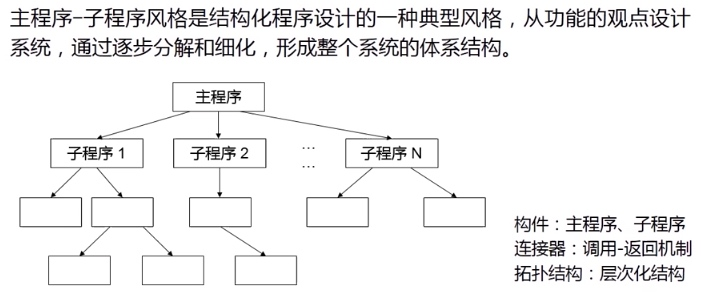
学习过程的C语言程序就是这种风格。
面向对象风格
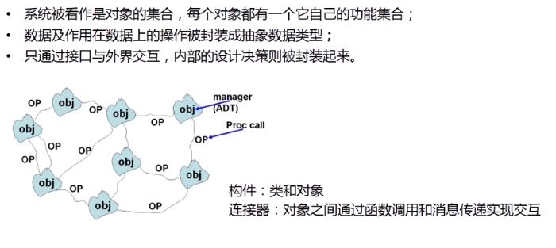
c++，java程序是这种风格。
管道-过滤器风格

数据中心风格
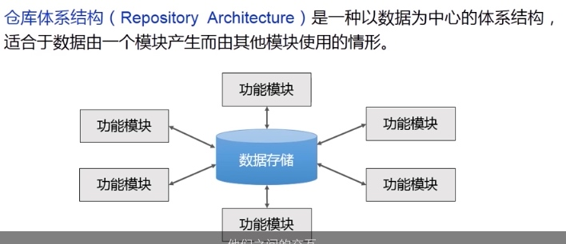
特点：功能模块之间的交互都通过仓库完成，适合实现经常发生改变，而且具有复杂数据处理的任务。缺点是功能模块与仓库耦合过高，数据存储容易成为性能瓶颈。程序语言编译器，数据库都是仓库结构。
接口
接口是一组操作的集合，它是对类、构建、子系统等行为的抽象
接口是指对协定进行定义的引用类型。由其他类型实现接口，以保证他们支持某些操作。
模块化设计的基本思想及概念
抽象
抽象：关注事物中与问题相关部分而忽略其他无关部分的一种思考方法。
抽象是控制复杂性的基本策略之一，在软件抽象层次中，最高层的抽象程度最高，若需要系统 某部分的细节，就一项较低层次的抽象。越是到较低层次，可看到的细节越多。软件开发过程其实就是对软件抽象层次的一次次细化的的过程。
- 在最高抽象级别上用面向问题域的语言描述问题，概述问题接的形式。
- 不断具体化，降低抽象级别。
- 在最低的抽象级别上给出实现问题的解，既源代码。
普遍运用的抽象包括三种：
过程抽象：Procedural Abstraction，把完成一个特定功能的动作序列抽象成一个过程名和参数表，只有指定过程名和实际参数调用此过程，其实就是编程中的方法。数据抽象：Data Abstraction，把一个数据对象的定义抽象为一个数据类型名，用此类型名可定义多个具有相同性质的数据对象，是编程中的struct。对象抽象：Object Abstraction，通过操作和属性组合了前两种抽象。
分解
Decomposition也是控制复杂性的方法。软件设计用分解来实现模块化设计。讲一个复杂的软件系统自顶而下地分解成若干个模块，每个模块完成一个软件的特性，将所有模块组装起来，成为一个整体，完成整个系统所要求的特性。
模块是能够单独命名并独立完成一定功能的程序语句的集合，例如结构化语言中的子程序和函数，面型对象语言中的类。
模块是可组合，分解，更换的单元。它具有两个基本特征：
* 内部特征：模块内部环境具有的特点。
* 外部特征：模块跟外部环境联系的接口（其他模块调用该模块的方式）和模块的功能。
不使用模块化的大型软件很难被人理解，质量也常常难以保证。
模块本身的复杂度和工作量随着模块的变小而减少，模块的接口工作量却随着模块数的增加而增大，一般把模块控制在最小成本区来减少总开发量。
良好模块化的优点：
- 降低软件复杂性
- 提高软件维护性
- 简化软件的实现
封装和信息隐藏
它是在用来解决如何分解软件来得到最好的一组模块？问题的。
封装和信息隐藏原则：使一个模块内包含的信息（处理和数据）对于不需要这些信息的模块来说是不能访问的。提出该原则的目的是为了提高模块的独立性，当修改或者维护模块时减少把一个模块的错误扩散到其他模块中去的机会。
封装和隐藏的是实现细节，将接口和实现有效分离。
功能独立
开发具有独立功能而且与其他模块之间没有过多的相互作用的模块，就可以做到模块独立。
内聚是一个模块内各个元素彼此结合的紧密程度，按由低到高包括：
- 偶然内聚：随手把重复代码收集成一个模块了，就出现了偶然内聚的模块。这个模块完成的多个任务之间最多存在比较松散的关系。低内聚。
- 逻辑内聚：如果一个模块完成的任务在逻辑上术语相同或者相似的一类（比如一个模块产生各种类型的输出），成为逻辑内聚。低内聚。
- 时间内聚：如果一个模块包含的任务必须在同一段时间内执行（例如模块化完成各种初始化工作）。低内聚。
- 过程内聚：一个模块内的处理元素是相关的，且必须以特定顺序执行，用流程图确定模块划分得到的往往是过程内聚的模块。中内聚。
- 通信内聚：如果所有元素都使用同一个输入数据（和，或）产出同一个输出数据。中内聚。
- 顺序内聚：如果一个模块内的处理元素和同一个功能密切相关，而且这些处理必须顺序执行。根据数据流图划分模块时通常得到顺序内聚的模块，他们的连接往往比较简单。
- 功能内聚：如果模块内所有元素术语一个整体，完成一个单一的功能。
设计应力求高内聚，避免低内聚。
耦合是对一个软件结构内不同模块之间互联程度的度量。耦合强弱取决于模块间接口的复杂程度，进入或访问一个模块的点，以及通过接口的数据。
Myes划分将耦合程度分为七类：
- 非直接耦合：1，2模块间没有消息传递。弱耦合。
- 数据耦合：1，2被同一模块调用时交换了简单变量。弱耦合。
- 特征耦合：1，2倍同一模块调用时交换了数据结构。弱耦合。
- 控制耦合：模块间传递用作控制信号的开关值或者标志量了，就是控制耦合。中等耦合。
- 外部耦合：允许一组模块访问同一个全局变量。较强耦合。
- 公共耦合：允许一组模块访问同一个全局性的数据结构。较强耦合。
- 内容耦合：一个模块可以直接调用另一个模块中的数据。至强耦合！
内容耦合是一种病态联系，尽量不要用。
面向对象设计原则
开闭原则
即OCP
开闭原则是面向对象设计中可复用设计的基石，是面向对象设计中最重要的原则之一，其他很多的设计原则都是开闭原则的一种手段。
软件实体应该对扩展开放，对修改关闭。
也就是软件系统包含的各种组件，比如模块，类以及功能等，应该在不修改现有代码的基础上引用新功能。
开闭原则中的开是指对于组件功能的扩展是开放的。闭是指对于原有代码的修改是封闭的。
符合开闭原则的优点：
- 可复用性好。
- 可维护性好。
Liskov替换原则
既LSP
任何基类可以出现的地方，子类一定可以出现。只有当衍生类可以替换掉基类且软件单位功能不受到影响时，基类才能真正被复用，而衍生类也能构在基类的基础上增加新的行为。
LSP是OCP的扩充。历史代还原则是对实现抽象化具体步骤的规范。
依赖转置原则
A. 高层次的模块不应该依赖于低层次模块，他们都应依赖于抽象。
B. 抽象不应该依赖于具体实现，具体实现应该依赖于抽象。
接口隔离原则
客户端不应该依赖它不需要的接口；一个类对另一个类的依赖应该建立在最小的接口上。
- 使用多个专门的接口比使用单一的总接口要好。
- 一个类对另外一个类的依赖应当是建立在最小的接口上的。
一个接口代表一个角色，不应当将不同的角色都交给一个接口。没有关系的接口合并在一起，形成一个臃肿的大接口，这是对角色和接口的污染。
解释：如果强迫用户使用它不使用的方法，那么这些客户就会面临由于这些不使用的方法的改变所带来的改变。
4.软件测试
测试是为了发现错误而执行程序的过程。
目的：发现程序的错误。
任务：通过计算机上执行程序，暴露程序中潜在的错误。
测试与调试（Debugging）不同。
调试的目的与任务如下：
目的：定位和纠正错误。
任务：消除软件故障，保证程序的可靠运行。
一般当测试发现软件的错误后通过调试来进行纠正。
测试用例是为了某个特殊目标而变质的一组测试输入，执行条件及预期结果，以便测试某个程序路径或者核实是否满足某个特定需求。
各种测试概念
单元测试是对软件中最小可测单元进行检查和验证。集成测试是通过测试发现与模块接口有关的问题。目标是把通过了单元测试的模块拿来，构造一个在设计中所描述的程序结构，应当避免一次性的集成（除非软件规模很小），而采用增量集成。系统测试是将经过集成测试的软件，作为计算机系统的一个部分，与系统中其他部分结合起来，在实际运行环境下对计算机系统进行的一系列严格有效地测试，以发现软件潜在的问题，保证系统的正常运行。回归测试是回归测试是指重复以前的全部或部分的相同测试。当发现并修改缺陷后，或在软件中添加新的功能后，重新测试。用来检查被发现的缺陷是否被改正，并且所做的修改没有引发新的问题。确认测试是在模拟的环境下，运用黑盒测试的方法，验证被测软件是否满足需求规格说明书列出的需求。
单元测试
单元测试是对软件中最小可测单元进行检查和验证。
优点：
- 验证代码：能不能跑通
- 设计更好：从使用者角度看
- 文档化行为：做Demo
- 具有回归性：自动化的可以做回归测试
内容包括：
- 模块接口：对通过所有北侧模块的数据流进行测试。
- 局部数据结构：检查模块中的数据结构是否正确的定义和使用。
- 边界条件：检查数据流或控制流中条件或数据处于边界时的出错可能性。
- 独立路径：检查由于计算错误、判定错误、控制流错误导致的程序错误。
- 出错处理：检查可能引发错误处理的路径以及进行错误处理的路径。
原则：
- 快速的
- 独立的
- 可重复的
- 自我验证的
- 及时的
过程是：
衡量测试质量的指标：
测试通过率是指在测试过程中执行通过的测试用例所占比例，单元测试通常要求测试用例通过率达到100%。
测试覆盖率是用来度量测试完整性的一个手段，通过覆盖率数据，可以了解测试是否充分以及弱点在哪里。代码覆盖率是单元测试的一个衡量标准，但也不能一味地追求覆盖率。一般要求达到70%~80%。
单元测试分为：
静态测试：通过人工分析或程序正确性证明的方式来确认程序的正确性。动态测试：通过动态分析和程序测试等方法来检查和确认程序是否有问题。
动态与静态的区别在于电脑要不要跑这个程序~
基于测试用例设计，把单元测试分为：
黑盒测试：又称功能测试，它将测试对象看做一个黑盒子，完全不考虑程序内部的逻辑结构和内部特性，只根据需求规格说明书，检查程序的功能是否符合它的功能说明。白盒测试：又称结构测试，它把测试对象看做一个透明的盒子，允许测试人员利用程序内部的逻辑结构及有关信息，设计或选择测试用例，对程序所有逻辑路径进行测试。驱动模块：单元测试中用于替代上层模块调用。桩模块：单元测试中用于替代下层调用模块。
xUnit工具适用的场景：
- 单个函数，一个类或者几个功能相关类的测试
- 特别适合春函数或者接口级别的测试
不适用的复杂场景：
- 被测对象依赖关系复杂，甚至无法简单创建。
- 对于一些失败场景的测试
- 被测对象中涉及多线程合作
- 被测对象通过消息与外接交互
Mock测试是在测试过程中对于某些不容易构造或者不容易获取的对象，用一个虚拟的对象（既Mock对象）老创建以便于测试的方法。
Mock技术的关键是需要应用针对接口的编程技术，既被测试的代码通过接口来引用对象，再使用Mock对象模拟所引用的对象及其行为，因此被测试模块并不知道它所引用的究竟是真是对象还是Mock对象。这样可以把北侧模块和所以来的模块进行隔离。

这个用例很实际，是不是应该把外部的调用都通过Interface封装下？
黑盒测试
设计良好的测试用例是测试的关键。它可以：
- 降低软件测试成本
- 保证测试工作质量
- 评估和检验测试效果
测试用例是为了一个特定的目标而设计的一组测试输入，执行条件，预期结果。它的目的是测试某个程序路径是否正确或者核实程序是否满足某个特定需求。
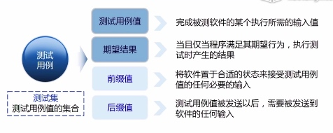
测试用例设计应该考虑：
- 少量代表性和典型性
- 寻求系统设计和功能设计的弱点
- 既有正确输入也有错误或异常输入
- 考虑用户实际的诸多使用场景
等价类划分是将输入域划分为尽可能少的若干紫玉，在划分中要求每个子域两两互不相交，每个子域成为一个等价类。

有效等价类是对规格说明有意义，合理的输入数据构成的集合，能够校验程序是否实现了规格说明中预先规定的功能和性能。
无效等价类是对规格说明无异议，不合理的输入数据构成的集合，已检查程序是否具有一定的容错性。
一个例子：
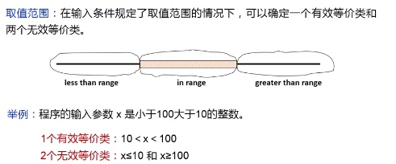
另一个例子：
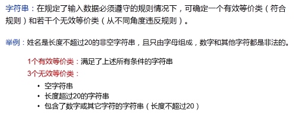
再来个例子：
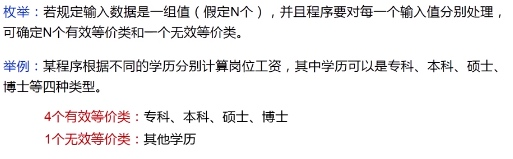
还是例子：
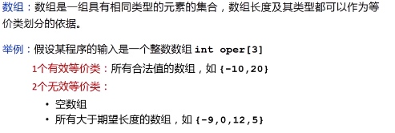
复合数据类型是包含两个或两个以上相互独立的属性的输入数据，在进行等价类划分时需要考虑输入数据的每个属性的合法和非法取值（所有组合）。

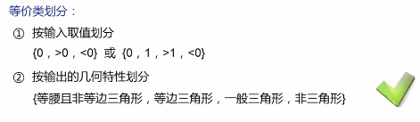
多数情况根据输入域划分，有一些情况可以用输出域划分。

边界值分析是对输入或输出的边界值进行测试的一种方法，它通常作为等价类划分法的补充，这种情况下的测试用例来自等价类的边界。
边界值分析的步骤是：
- 先确定边界：通常输入或输出等价类的边界就是应该着重测试的边界情况。
- 选取正好等于，刚好大于或刚刚小于边界的值作为测试数据。
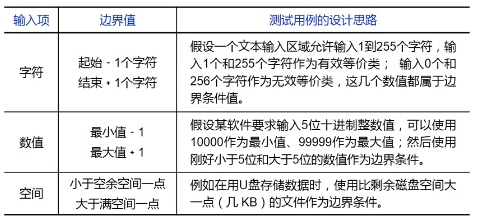
故障往往出现在输入变量的边界值附近
健壮性测试是作为边界值分析的一个简单的扩充，它除了对变量的5个边界值分析取值外，还要哦增加一个略大于最大值及略小于最小值的取值，检查超过极限值是系统的情况。
错误推测发是人们根据经验或者直觉推测程序中可能存在的各种错误，从而有针对性第便携检查这些错误的测试用例的方法。
白盒测试
测试需求：测试需求是软件制品的一个特定元素，测试用例必须满足或覆盖这个特定元素。
覆盖标准：一个覆盖标准是一条规则，或者将测试需求施加在一个测试机上的一组规则。（例如每一条语句都要执行）
测试覆盖：给定一个覆盖标准C和相关的测试需求集合TR，如果说一个测试集合T满足C，那么对于测试集合TR中的每一条测试需求tr，在T中至少存在一个测试t可以满足tr。(这个不是覆盖率，是覆盖，绝对的包含关系，每一个测试需求，至少有一个测试用例满足)
覆盖程度：给定一个测试需求集合TR和一个测试集合T，覆盖程度就是T满足测试需求数栈TR总数的比例。
- 软件缺陷具有空间聚集性（比如项*的路径）
代码覆盖率一般包括：
* 语句覆盖
* 判定覆盖
* 条件覆盖
* 判定条件覆盖
* 条件组合覆盖
* 路径覆盖
面包机的例子
单纯的黑盒测试时不够的，还要使用白盒测试，白盒测试对代码中的逻辑关系的覆盖更为全面，做得好可以及大地增强产品的健壮性。
控制流图Control Flow Graph是一个过程或程序的抽象表示。是流程图的一个简化。
- 矩形代表连续的顺序计算，也称为基本快。
- 节点是语句或语句的一部分，便表示语句的控制流。


Tip
面向过程的开发，上层调用下层，上层依赖于下层，当下层剧烈变动时上层也要跟着变动，这就会导致模块的复用性降低而且大大提高了开发的成本。